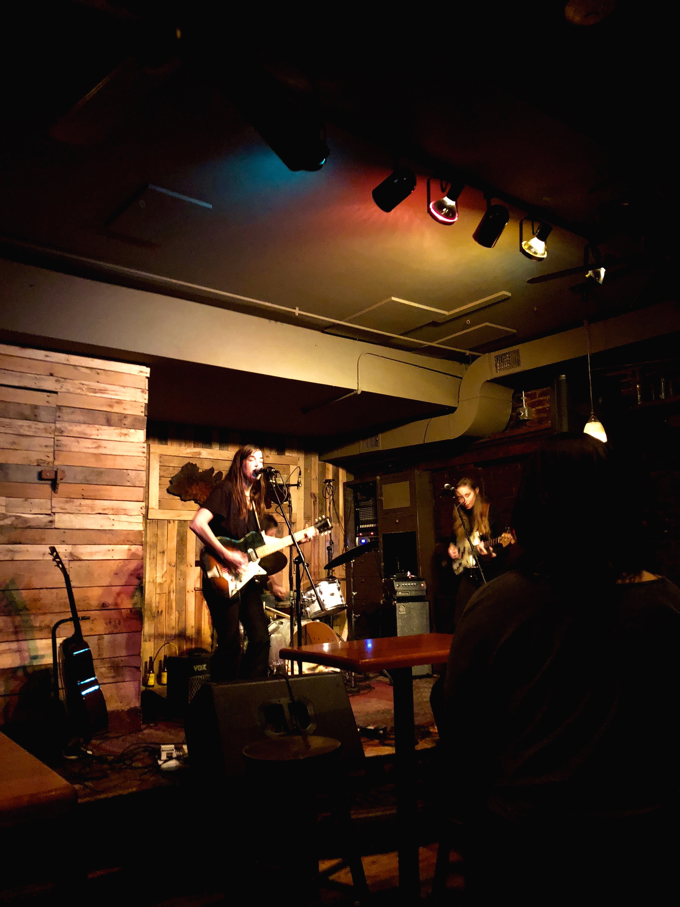
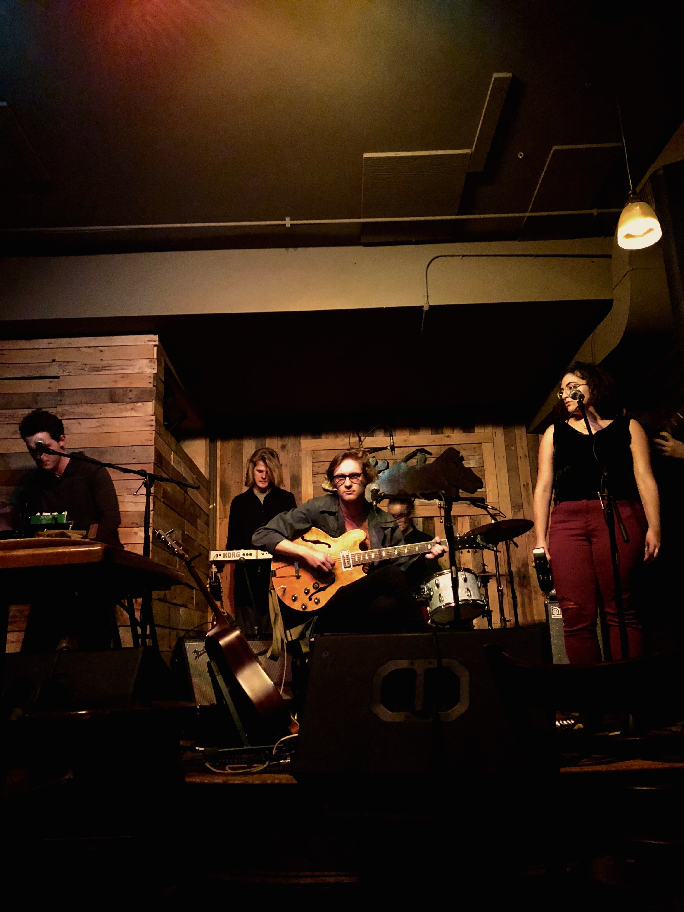

I’m gonna preface this write-up with a clarification, of sorts; something I’ve been taking for granted but never bothered to articulate (before now). Unless I say otherwise – and it’d take a productive imagination to think up any relevant scenario(s) – these bits are reviewing specific gigs; not the group, band, whatever you want to call it, that’s performing outside of how they present at the gig and how that jives with prior exposure. Before any of the reviews, if I haven’t already, I listen to relevant discographies, but unless I wanna take a God-like stance on “getting” the dynamics of a group from one measly gig (let me assure you I do not, don’t think my rabbi would be down w that anyway) these reviews are just reviews of the gigs they purport to cover. EOM.
Having prefaced this then, I have to say that Monday night was not a great gig. Monday night at Atwood’s Tavern was the wrong venue, physically, technically and emotionally, for both Jenny O. and The Solars (who opened). Think sparse attendance, mediocre lighting, and enough tech malfunctions to have Jenny (of Jenny O.) audibly joke “this is terrible!!” and call a (not-joking) SOS into the audience.
In not so many words, my experience of the music was high-key mitigated by the venue’s graceless setup, and the gig suffered accordingly. That said, though Atwood’s was a brutal spot, I’m really impressed with the way Jenny O.* specifically (*that designator’s gonna have to mean the whole band, including the bassist and drummer whose names are nowhere on Jenny O.’s site) handled some glaring and disruptive SNAFUs[1], and produced seriously high-quality music throughout.
*****
The Solars, fronted by virtuoso Miles Hewitt, opened (a little late) to a very small crowd. There were maybe seven heads in the bar; another three if you count those who had only come for the beer. But, they went with it, and to be honest the venue fit their still gleefully sophomoric, or at least generally undergraduate, vibe.
Hewitt has an unreal voice, reminiscent of the vocals on Alt-J’s An Awesome Wave, and I was keenly aware (especially in the beginning of the set) of the fact that Atwood’s swallowed his voice, and the music, unfairly somehow. He was in charge of banter, of lead-man guitar, and of half the vocals- which he shared with another femme singer (Sydney Lee?) who added her voice to the soundstage with an insouciant, Dounia-like vibe. Separately, both voices were strong and touchingly earnest, but together (and this was a recurring theme) at best not as good and at worst straight-up disappointingly discordant.
Hewitt + the bassist, the drummer and the brass/synth player (names unclear) were easily the core of the band, and led a surprisingly diverse set that’d best have been described as the basement-concert love child of Alt. J and Beirut. Towards the end of the set The Solars played some of their newer stuff – Queen of the Suburbs, Independence Day, etc. – to applause about as enthusiastic as a 7-person audience can muster, well deserved. The stuff from their newest EP, Retitled Remastered (go look, if only for the cover art) which Digboston said “could be the first of several signs that The Solars would, and then did, make it big” was by far the best of the live set, and at second listen the best of their recorded stuff, too.
tl;dr they deserved better than Atwood’s, and will also for the foreseeable future be on repeat when I smoke.

*****
After The Solars Jenny O., on with the other two thirds of her three-piece, opened on a California indie-rock influenced track that couldn’t have sounded more professional, and couldn’t have bopped any harder (if that can be said about indie-rock) if she’d skipped the gig and played a studio recording of the song so she could share a beer with the (still-small) crowd. I was high-key impressed. The vocals were somewhat obscured under the music, which was a bummer because (i) you could only understand every fourth word she said, and (ii) the music was really well-executed but for the most part a little repetitive, and her voice sounded like it could’ve been the antidote to the follow-on fatigue. Even obscured though, her voice mellowed throughout the first song until by the end she’d reached a chill honey-toned croon (that’s not the right word, imagine the way someone in Portland would croon to a coffee house-themed venue) and the room was silent, just listening.
{kind=link}
But then, the indie-rock hit the fan. Between the first and second songs Jenny O., like Hewitt, was in charge of banter and came off like an artist playing a TV version of herself on Girls (it was endearing, that’s not as bad as it sounded.) She tuned up with her bassist, looked to her to start the next track, and (actually the Girls analogy still works here, the bassist looked like a smaller, mildly stoned Jemima Kirke) they got, maybe, 15 seconds in? Before the sound gave out, as in almost completely, to the point where everything stopped and Jenny O. was left (I’ve already mentioned this but it’s worth mentioning twice) calling an “SOS” into the audience. None came. To their credit, the band handled the SNAFU as gracefully as might have been hoped, but it was nearly ten minutes before anything started up again and by the time they made their recovery the room had shifted from awkward to impatient and back again, and I (for one) was relieved to be reminded of the pretense under which we’d all come through.
Their first recovery was actually a real high-point in the set, great sound, an awesome vibe (again with the relief) and a control of rhythm and groove that would’ve been impressive anyway even if they hadn’t just spent ten minutes flailing in front of a very small crowd. When they came back on, I noticed (especially in contrast to The Solars) that where Jenny O.’s voice was great, it was even better in moments of overlap with her bassist’s singing, and again both got (even) better with time. The third and fourth tracks (at time of writing, I have no set list, and the lyrics were unintelligible so they’re hard to search) demonstrated a wild diversity of sound- especially considering that they stayed comfortably in the cali indie-rock genre. There was a great bass solo in the third, and the fourth song had by far the best vocals of the night.
But, even after the first, major crisis, the tech SNAFUs were constant. Honestly, I wasn’t disposed to blame them or be disappointed (in anything/one but the tech) as they all (Jenny O. in particular) continued to demonstrate an extraordinary capacity for endearing awkwardness, with banter (“this is really awkward!”) and more music (at one point the bassist and drummer jammed to cover the silence, some of their best rhythm work tbh). That said, where I wrote at one point that it seemed like the more awkward the transition, the better the next song would be, after an hour I was too distracted by the sound issues and the noise in the venue to get what I had been getting from the music.
tl;dr was not the night for them, but I’d listen on a drive to the beach and am crossing my fingers that they’ve reached their cosmic quota on tech mishegas.
[1] SNAFU: Situation Normal All Fucked Up